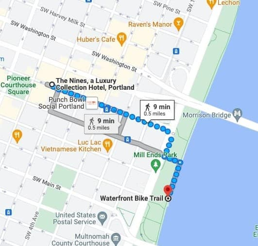

Social Activities
Welcome to MobiSys 2022 in Portland, OR! We’re organizing the following social activities to encourage networking in a more relaxed and informal setting.
#1 Riverfront Morning Walk
7:15am-8:15am Tuesday June 28, 2022
In this hour-long morning walk we’ll visit the Waterfront Trail along the Willamette riverfront. It is conveniently located just steps away from the conference venue. What better way to start your conference day than the fresh morning air and gorgeous views of the Portland skyline!
7:15am Start from The Nines hotel lobby
|
| ~1.5 mile (2.4 km) round trip walk along the Waterfront Trail
|
8:15am Return to conference center for breakfast
Sign up here: https://forms.gle/gRoSELgs8p5EHvwd8
The event will be canceled in case of bad weather.
#2 Multnomah Falls and Columbia River Gorge
Friday July 1, 2022 (Morning trip departs at 8:30am, afternoon trip departs at 2:00pm)
Join us on a 1/2 day trip to the beautiful Multnomah Falls located in the Columbia River Gorge located just east of the Portland metro area. It is one of the most visited destinations in the area with millions of visitors each year. Come explore the natural beauty and volcanic history!
The cost of the trip is $79.00 to be paid directly to the tour company.
Seats are limited! Please sign-up soon! Additional sign-ups will be added to a waitlist and we’ll move you to the confirmed list if a spot opens up.
Sign up link: https://forms.gle/sygyTKnb4cQQkY266
#3 Portland Spirit Cruise + Banquet
Wednesday June 29, 2022
6:20pm Meet our guides at the hotel main entrance
6:30pm Arrive at the boarding location
7:00pm Cruise starts
9:30pm Return to the boarding location
Banquet will be held on the Portland Spirit Cruise. For any questions, refer to our local arrangements chair (Wu-Chang Feng, wuchang@pdx.edu).
Boarding Location: Salmon Springs Fountain in the Waterfront Park. The ship is docked by the river in front of the fountain. Boarding location shown in map below:

Boarding Time: Please be at the docking station by 6:30 pm. We will also have two guides who will depart from The Nines hotel main entrance (on SW Morrison St) at 6:20 pm.
Cruise Duration: 2.5 hours. We will be back to the same boarding location at 9:30 pm.
Identity Check: Please make sure to bring your conference badge (or ID) in order to board the ship.
#4 Hike in Washington Park
5:30pm Thursday June 30, 2022
Washington Park is a 400 acre natural area right here in Portland’s backyard! It is home to the Hoyt arboretum, the International Test Rose Garden and the Oregon Zoo. We will take public transit (MAX train) and hike a few trails in the park. Depending on interest, we will split into two groups: one taking a shorter route through the war memorial and the arboretum (~1.5 miles round trip). The second group will visit the Rose Garden (~4 miles round trip).
Sign up link:
The event will be canceled in case of bad weather.